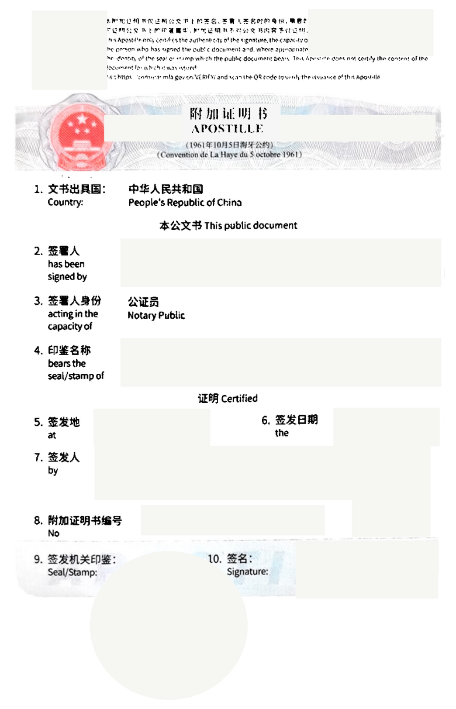
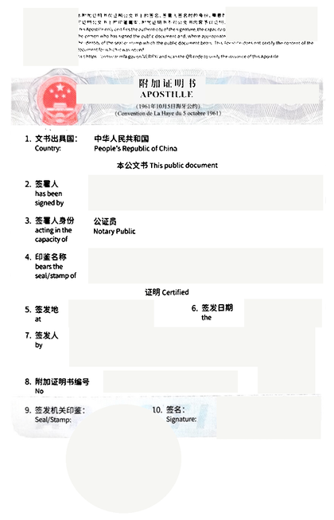
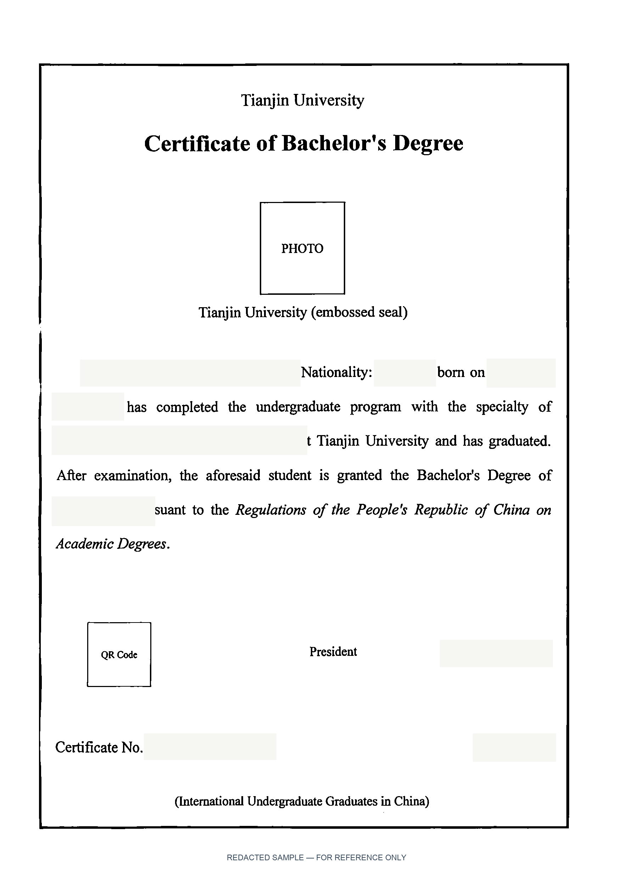

Chinese Notarial Certificate
Page 3: the Chinese notarial statement in this academic document set.
View Redacted Image ↗REAL DOCUMENTS · SAMPLES & GUIDE
Explore a real, permanently redacted China Apostille sample, understand its 10 standard fields, and learn how apostilles relate to notarized documents and international use.
Real example: an academic notarial document set

UNDERSTAND THE CERTIFICATE
An Apostille is a certificate used under the Hague Apostille Convention to authenticate the relevant signature, the capacity in which the signer acted and, where appropriate, the identity of the seal or stamp on a public document.
For China-issued documents, it may be attached to an eligible public document or a notarial document set. Some documents need notarial preparation first; the appropriate form depends on the document and receiving requirements.
For detailed preparation and application guidance, read our guide to the China apostille process.
ONE REAL ACADEMIC DOCUMENT SET
The example below is page 6 of a real degree-certificate notarization and Apostille set. It is not a police clearance certificate Apostille case.

This example includes the bilingual Apostille heading, Convention reference and 10 numbered fields. Other formats, issuing authorities and attachment methods may look different.
WebP image · 1786 × 2526 · Zoom available
A redacted reference image cannot be used to verify an individual record. For your own document, use the competent authority’s official channel and match the identifying details to the correct document bundle.
Official MFA verification portal ↗For preparation assistance, explore our China apostille service.
Read the standard fields in their printed order. The numbered explanations below are outside the image; they do not add or alter any certificate content.
The country from which the underlying public document originates.
The signer of the underlying public document. The personal name is hidden in this sample.
The capacity in which that signer acted. This sample shows a notarial capacity.
The institution associated with the underlying document’s seal or stamp. The specific value is redacted.
The place where the Apostille was issued.
The Apostille issue date, rather than the applicant’s birth date.
The Apostille issuer. This field is separate from the underlying document’s signer in field 2.
The Apostille identifier. It has been permanently removed from this sample.
The issuing authority’s seal or stamp position. The actual seal is removed here.
The Apostille signatory’s signature position. The signature is removed here.
These are different documents in one academic set. A degree certificate records an academic award; a notarial statement records the relevant notarial act; an Apostille authenticates the relevant formal origin of the public document. They are not interchangeable.
This sequence illustrates the supplied set, not a mandatory route for every document. The set also includes its cover and a degree translation.
Page 3: the Chinese notarial statement in this academic document set.
View Redacted Image ↗Page 5: the English notarial statement accompanying the same set.
View Redacted Image ↗Page 1: the cover of the notarial booklet.
View Redacted Image ↗Page 2: a Tianjin University bachelor’s degree document.
View Redacted Image ↗
Page 4: the English translation of the degree document.
View Redacted Image ↗Page 6: the Apostille attached to this notarial set.
View Redacted Image ↗All six page types are retained. See our China degree Apostille service for academic-document assistance.
First establish the destination and document form. The Convention’s applicability, exemptions and receiving requirements determine the appropriate route.
| What to check | Apostille | Consular legalization |
|---|---|---|
| Applicable route | For covered public documents where the Convention is in force and applicable between the relevant places, unless authentication is waived. | May be required outside the applicable Convention route, subject to exemptions and the destination’s rules. |
| Authority | The competent authority designated for the public document. In mainland China this includes the MFA and authorized local foreign affairs offices. | The relevant authority chain and diplomatic or consular mission, as the destination requires. |
| Further legalization | Within the Convention’s applicable scope, it replaces traditional diplomatic or consular legalization. | Follow the actual document and destination route; do not assume one fixed number of stages. |
| Receiving requirements | Neither route guarantees acceptance of the document’s content, age, translation or submission format. Confirm these separately with the receiving institution. | |
On smaller screens, scroll within the comparison table to read all columns.
Read the embassy and consular legalization guide for a route outside the Apostille scope, or explore China Apostille Services support.
Use the HCCH status table and declarations to check entry into force and the relevant relationship. The MFA’s official announcement explains the mainland China implementation and issuing arrangements.
Destinations referenced in this resource include the United Kingdom, Germany, France, Italy, Spain, the Netherlands, Portugal, Australia, New Zealand and Singapore. This list alone is not proof that a particular document or submission will be accepted.
Applicants using Chinese documents overseas, students and graduates, and institutional document reviewers may encounter these categories. The required route depends on the document, destination and receiving authority.
Check whether the receiving authority requests authentication of China PCC documents.
Read the Guide →Review academic-document requirements and the appropriate document form.
Read the Guide →Learn about document preparation for an overseas birth-record submission.
Read the Guide →Check the requested certificate form and destination requirements.
Read the Guide →Explore topic-specific guidance for different public documents.
Read the Guide →These are document-topic guides, not additional Apostille samples from this case.
A typical application may involve the following checks. Notarization, translation, representation and submission steps depend on the actual document and authority.
Check the document type, destination, receiving institution and whether the Convention route applies.
Identify the original document, notarial certificate or other public-document form that is requested.
Complete any necessary notarial work and required translation. Not every document follows the same route.
Submit an eligible public document to the competent authority under its current procedures.
Check identifying details, attachment, issue information and the official verification instructions.
Follow the recipient’s original, electronic, translation and recency requirements.
Answers about samples, verification, document formats and international use.
A China apostille sample typically shows the apostille certificate together with the document or notarized bundle it authenticates. Common fields include the issuing authority, certificate number, date, official seal or stamp, signature, and details linking the certificate to the underlying document. The exact layout and attachment method may vary by authority, document type, and administrative region.
No. China apostilles generally contain the standard information required for an apostille, but their appearance may differ. Layout, language, seals, signatures, reference numbers, verification methods, and attachment formats can vary by issuing authority, document type, and region. Compare the required identifying details and their connection to the correct document instead of expecting every certificate to look exactly like one sample.
Online verification may be available when the apostille provides a QR code, reference number, or instructions for an official verification system. Methods vary, and not every certificate uses the same process. Use only the channel identified by the competent authority and confirm that the record matches the certificate number, issue date, signer, and attached document.
A China apostille generally does not include a universal expiration date because it authenticates the signature, seal, stamp, or official capacity associated with the underlying document. However, the document itself may expire or the receiving authority may require a recently issued version. Check the document's validity and the destination organization's current timing requirements before using an older apostilled document.
A scanned apostille copy may be accepted for an initial review, online application, or document pre-check, but some authorities require the original apostilled document or a properly issued electronic version for final submission. Acceptance depends on the destination, receiving institution, document type, and filing method. Confirm the receiving authority's instructions before relying on a scan instead of the original.
No. First confirm whether the Apostille Convention applies between China and the destination country and covers the document. Within its scope, an apostille replaces traditional diplomatic or consular legalization unless authentication is waived. Outside that scope, traditional consular legalization may be required, subject to applicable exemptions. Notarization, translation and submission requirements should be checked separately.
No. An Apostille certifies the relevant signature, the capacity in which the signer acted and, where appropriate, the identity of the seal or stamp. It does not certify the contents of the underlying document or guarantee that a receiving institution will accept it.
It depends on the document form and the receiving requirements. This example includes a notarial document set, but it does not establish a universal rule for every Chinese public document. Confirm whether the relevant authority requires an original public document, a notarial certificate or another eligible form.
No. Check whether the Convention is in force and applicable between the place of origin and the destination, whether it covers the document, and whether an exemption applies. Translation, document-content, recency and submission rules must still be checked with the receiving institution. A list of Convention parties alone is not enough.
An application concerning a Chinese public document may still be possible, but any representative procedure, identity checks, document availability and authority requirements must be confirmed for the case. Do not assume every document can be handled remotely or without access to the required original or eligible public document.
Continue with the resource that matches your question, or browse China Apostille guides by topic.
Official references checked 18 November 2026: Convention text, standard certificate model and the MFA implementation announcement. Requirements should be rechecked for the actual document and destination.
DOCUMENT APPLICATION ASSISTANCE
Global Attest can assist with document preparation, notarization, apostille and related international document services, depending on the document and destination requirements.